在Kubernetes称为容器编排的标准之后，Service Mesh开始火了起来，但是很多文章讲概念的多，讲技术细节的少，所以专门写一篇文章，来解析Service Mesh背后的技术细节。
一、Service Mesh是Kubernetes支撑微服务能力拼图的最后一块
在上一篇文章为什么 kubernetes 天然适合微服务中我们提到，Kubernetes是一个奇葩所在，他的组件复杂，概念复杂，在没有实施微服务之前，你可能会觉得为什么Kubernetes要设计的这么复杂，但是一旦你要实施微服务，你会发现Kubernetes中的所有概念，都是有用的。
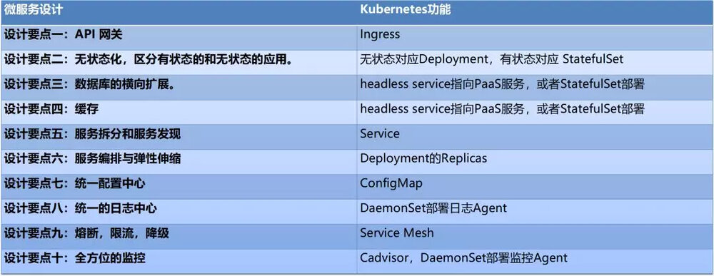
在我们微服务设计的十个要点中，我们会发现Kubernetes都能够有相应的组件和概念，提供相应的支持。
其中最后的一块拼图就是服务发现，与熔断限流降级。
众所周知，Kubernetes的服务发现是通过Service来实现的，服务之间的转发是通过kube-proxy下发iptables规则来实现的，这个只能实现最基本的服务发现和转发能力，不能满足高并发应用下的高级的服务特性，比较SpringCloud和Dubbo有一定的差距，于是Service Mesh诞生了，他期望讲熔断，限流，降级等特性，从应用层，下沉到基础设施层去实现，从而使得Kubernetes和容器全面接管微服务。
二、以Istio为例讲述Service Mesh中的技术关键点
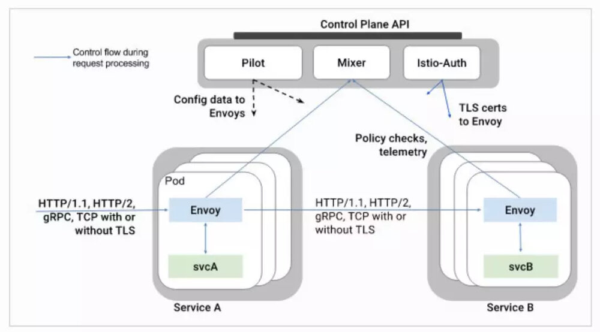
就如SDN一样，Service Mesh将服务请求的转发分为控制面和数据面，因而分析他，也是从数据面先分析转发的能力，然后再分析控制面如何下发命令。今天这篇文章重点讲述两个组件Envoy和Pilot
一切从Envoy开始
我们首先来看，如果没有融入Service Mesh，Envoy本身能够做什么事情呢？
Envoy是一个高性能的C++写的proxy转发器，那Envoy如何转发请求呢？需要定一些规则，然后按照这些规则进行转发。
规则可以是静态的，放在配置文件中的，启动的时候加载，要想重新加载，一般需要重新启动，但是Envoy支持热加载和热重启，一定程度上缓解了这个问题。
当然最好的方式是规则设置为动态的，放在统一的地方维护，这个统一的地方在Envoy眼中看来称为Discovery Service，过一段时间去这里拿一下配置，就修改了转发策略。
无论是静态的，还是动态的，在配置里面往往会配置四个东西。
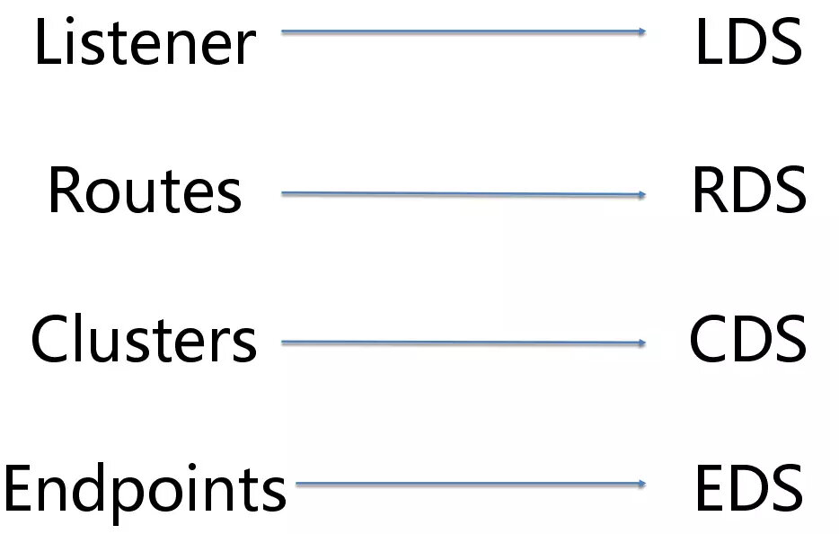
一是listener，也即envoy既然是proxy，专门做转发，就得监听一个端口，接入请求，然后才能够根据策略转发，这个监听的端口称为listener
二是endpoint，是目标的ip地址和端口，这个是proxy最终将请求转发到的地方。
三是cluster，一个cluster是具有完全相同行为的多个endpoint，也即如果有三个容器在运行，就会有三个IP和端口，但是部署的是完全相同的三个服务，他们组成一个Cluster，从cluster到endpoint的过程称为负载均衡，可以轮询等。
四是route，有时候多个cluster具有类似的功能，但是是不同的版本号，可以通过route规则，选择将请求路由到某一个版本号，也即某一个cluster。
这四个的静态配置的例子如下：
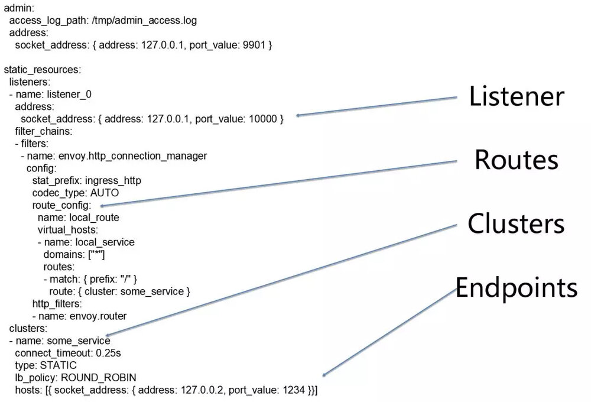
如图所示，listener被配置为监听本地127.0.0.1的10000接口，route配置为某个url的前缀转发到哪个cluster，cluster里面配置负载均衡策略，hosts里面是所有的endpoint。
如果你想简单的将envoy使用起来，不用什么service mesh，一个进程，加上这个配置文件，就可以了，就能够转发请求了。
对于动态配置，也应该配置发现中心，也即Discovery Service，对于上述四种配置，各对应相应的DS，所以有LDS, RDS, CDS, EDS。
动态配置的例子如下：
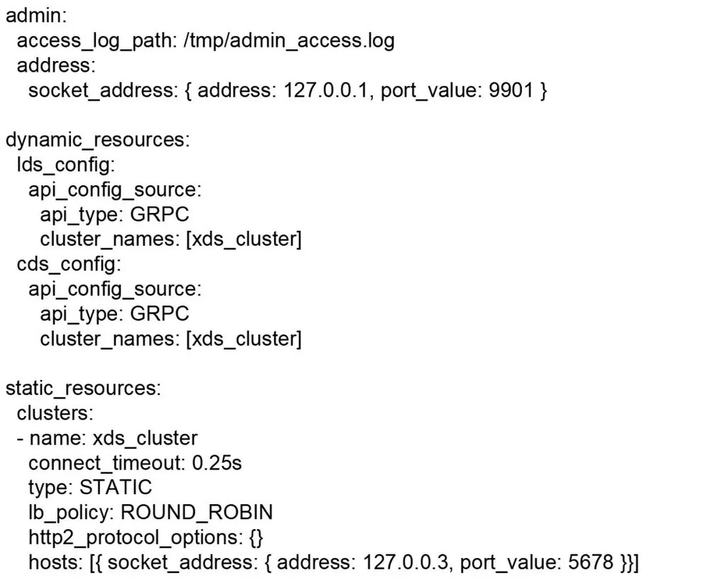
控制面Pilot的工作模式
数据面envoy可以通过加装静态配置文件的方式运行，而动态信息，需要从Discovery Service去拿。
Discovery Service就是部署在控制面的，在istio中，是Pilot。
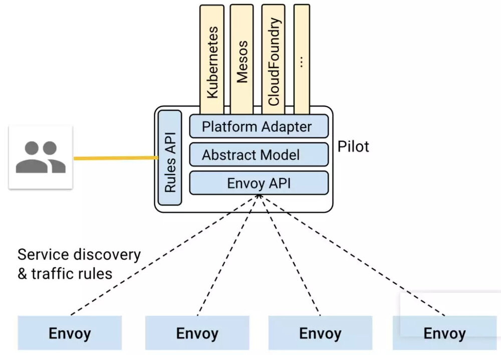
如图为Pilot的架构，最下面一层是envoy的API，就是提供Discovery Service的API，这个API的规则由envoy定，但不是Pilot调用Envoy，而是Envoy去主动调用Pilot的这个API。
Pilot最上面一层称为Platform Adapter，这一层是干什么的呢？这一层不是Kubernetes, Mesos调用Pilot，而是Pilot通过调用Kubernetes来发现服务之间的关系。
这是理解Istio比较绕的一个点。也即pilot使用Kubernetes的Service，仅仅使用它的服务发现功能，而不使用它的转发功能，pilot通过在kubernetes里面注册一个controller来监听事件，从而获取Service和Kubernetes的Endpoint以及Pod的关系，但是在转发层面，就不会再使用kube-proxy根据service下发的iptables规则进行转发了，而是将这些映射关系转换成为pilot自己的转发模型，下发到envoy进行转发，envoy不会使用kube-proxy的那些iptables规则。这样就把控制面和数据面彻底分离开来，服务之间的相互关系是管理面的事情，不要和真正的转发绑定在一起，而是绕到pilot后方。
Pilot另外一个对外的接口是Rules API，这是给管理员的接口，管理员通过这个接口设定一些规则，这些规则往往是应用于Routes, Clusters, Endpoints的，而都有哪些Clusters和Endpoints，是由Platform Adapter这面通过服务发现得到的。
自动发现的这些Clusters和Endpoints，外加管理员设置的规则，形成了Pilot的数据模型，其实就是他自己定义的一系列数据结构，然后通过envoy API暴露出去，等待envoy去拉取这些规则。
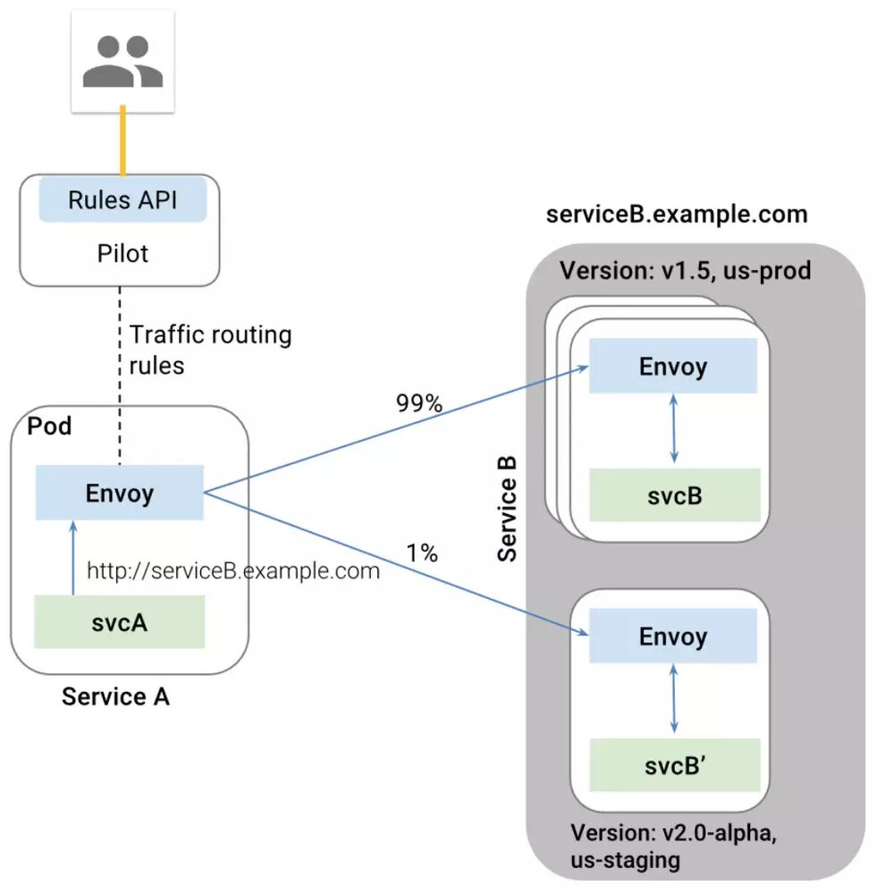
常见的一种人工规则是Routes，通过服务发现，Pilot可以从Kubernetes那里知道Service B有两个版本，一般是两个Deployment，属于同一个Service，管理员通过调用Pilot的Rules API，来设置两个版本之间的Route规则，一个占99%的流量，一个占1%的流量，这两方面信息形成Pilot的数据结构模型，然后通过Envoy API下发，Envoy就会根据这个规则设置转发策略了。
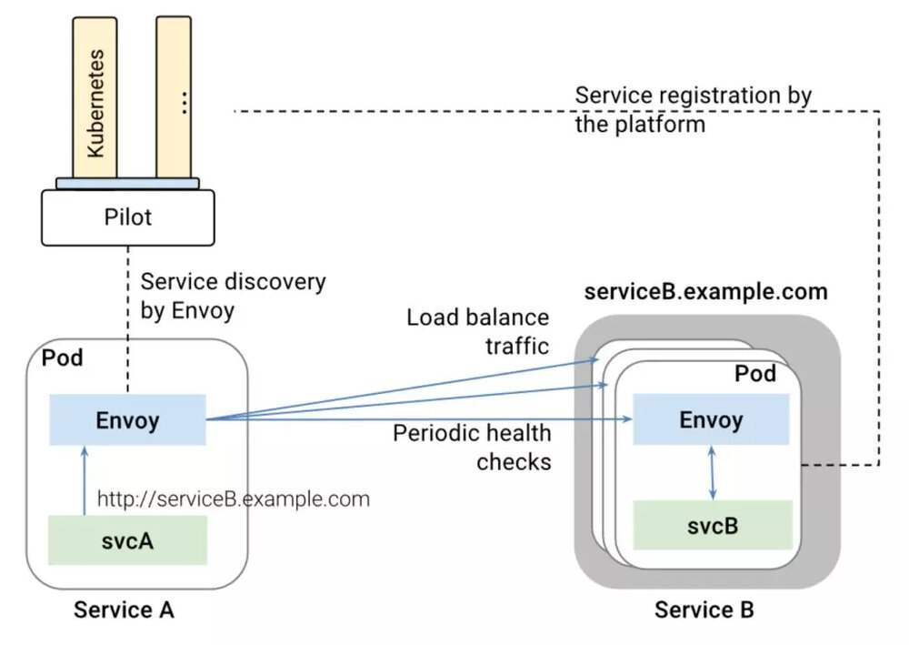
另一个常用的场景就是负载均衡，Pilot通过Kubernetes的Service发现Service B包含一个Deployment，但是有三个副本，于是通过Envoy API下发规则，使得Envoy在这三个副本之间进行负载均衡，而非通过Kubernetes本身Service的负载均衡机制。
三、以Istio为例解析Service Mesh的技术细节
了解了Service Mesh的大概原理，接下来我们通过一个例子来解析其中的技术细节。
凡是试验过Istio的同学都应该尝试过下面这个BookInfo的例子，不很复杂，但是麻雀虽小五脏俱全。
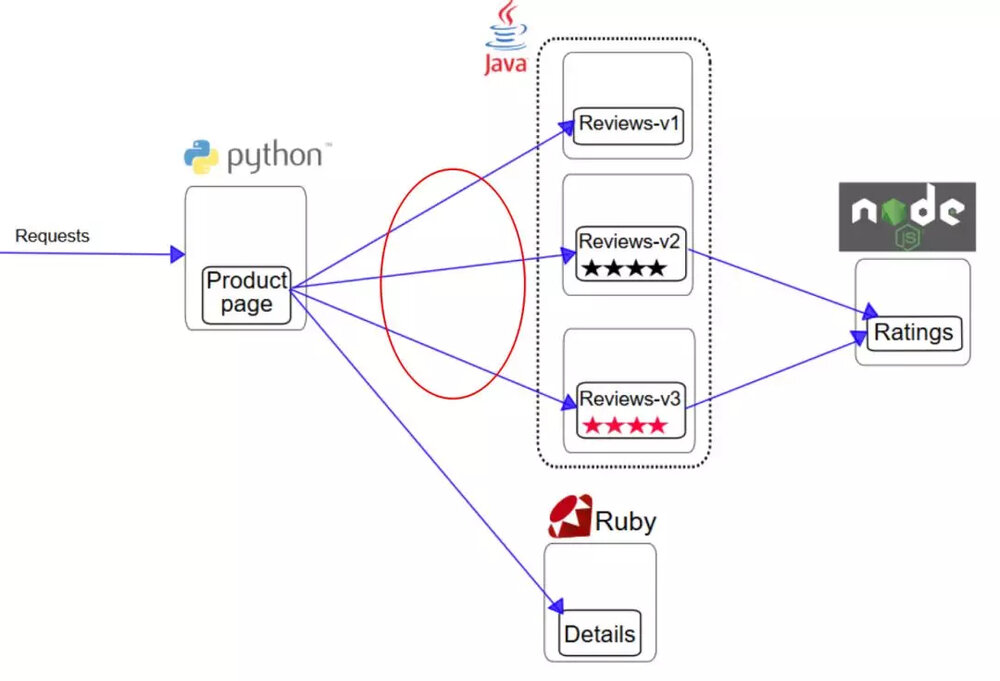
在这个例子中，我们重点关注ProductPage这个服务，对Reviews服务的调用，这里涉及到路由策略和负载均衡。
Productpage就是个Python程序
productpage是一个简单的用python写的提供restful API的程序。
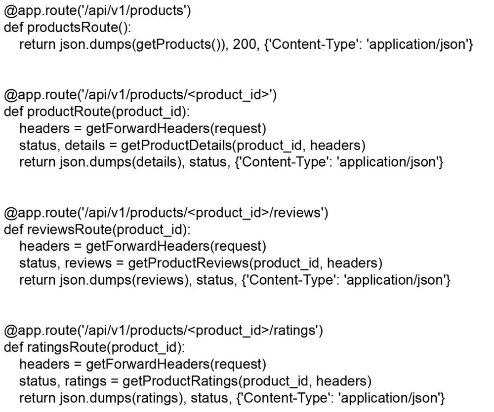
在里面定义了很多的route，来接收API请求，并做相应的操作。
在需要请求其他服务，例如reviews, ratings的时候，则需要向后方发起restful调用。
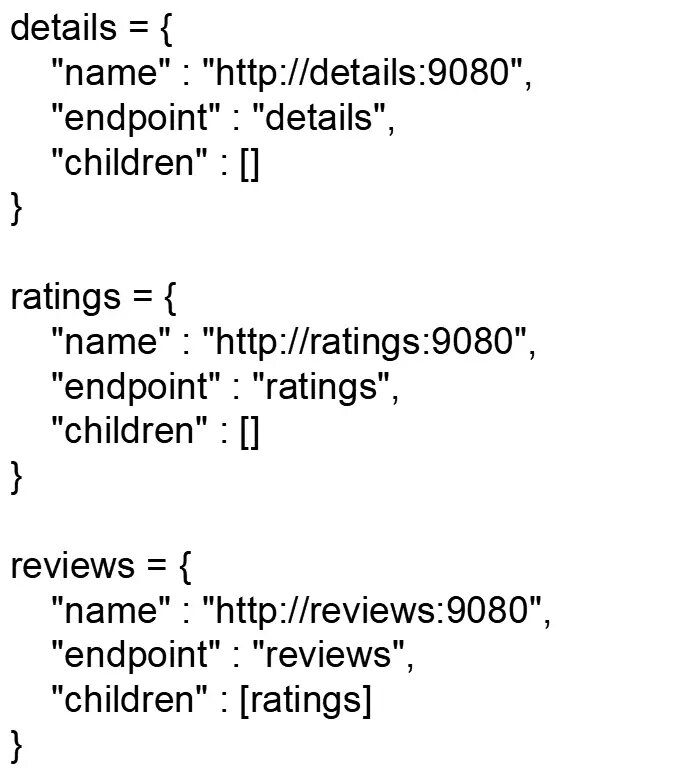
从代码可以看出，productpage对于后端的调用，都是通过域名来的。
对于productpage这个程序来讲，他觉得很简单，通过这个域名就可以调用了，既不需要通过服务发现系统获取这个域名，也不需要关心转发，更意识不到自己是部署在kubernetes上的，是否用了service mesh，所以服务之间的通信完全交给了基础设施层。
通过Kubernetes编排productpage
有了productpage程序，接下来就是将他部署到kubernetes上，这里没有什么特殊的，用的就是kubernetes默认的编排文件。
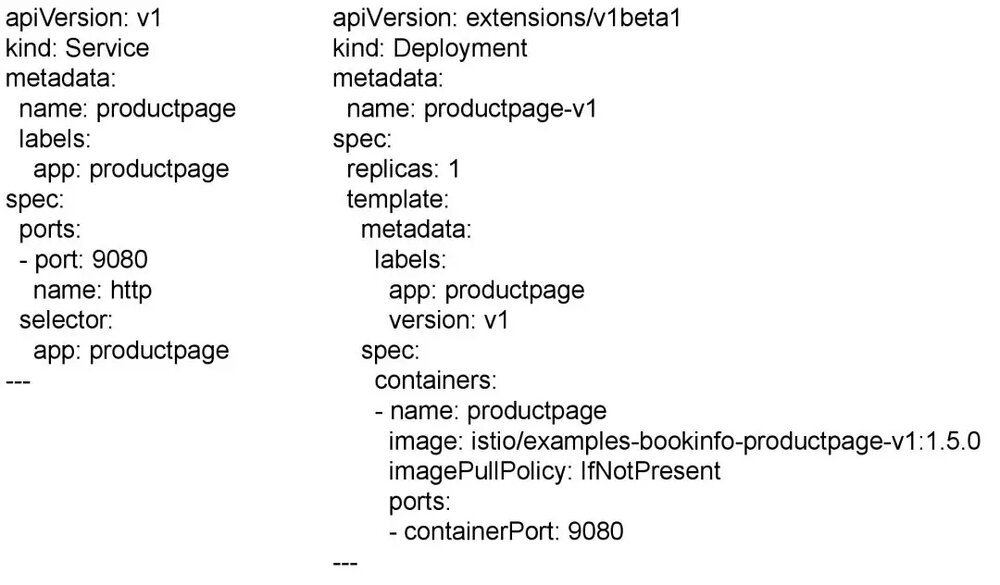
首先定义了一个Deployment，使用bookinfo的容器镜像，然后定义一个Service，用于这个Deployment的服务发现。
通过Kubernetes编排reviews
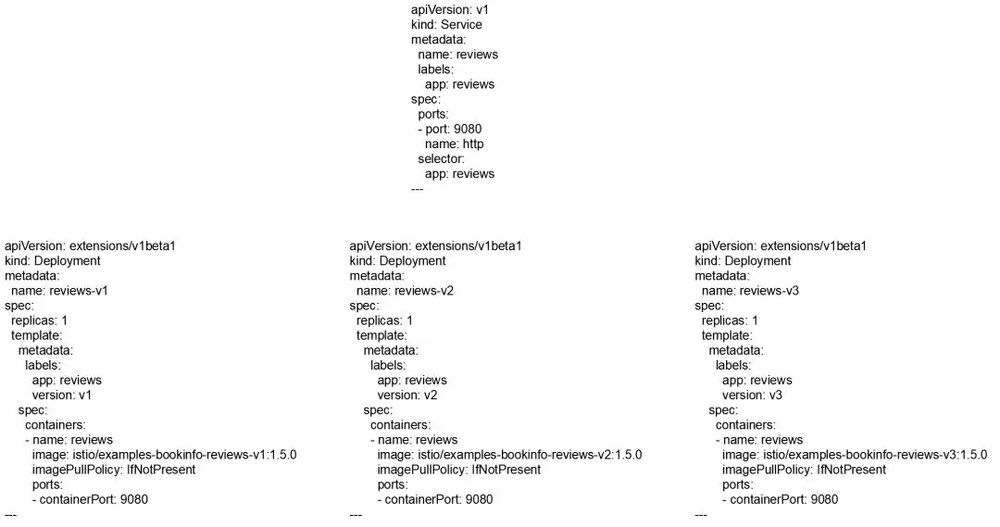
这个稍微有些复杂，定义了三个Deployment，但是版本号分别为V1, V2, V3，但是label都是app: reviews。
最后定义了一个Service，对应的label是app: reviews，作为这三个Deployment的服务发现。
istioctl对productpage进行定制化之一：嵌入proxy_init作为InitContainer到目前为止，一切正常，接下来就是见证奇迹的时刻，也即istio有个工具istioctl可以对于yaml文件进行定制化
定制化的第一项就是添加了一个initContainer，这种类型的container可以做一些初始化的工作后，成功退出，kubernetes不会保持他长期运行。
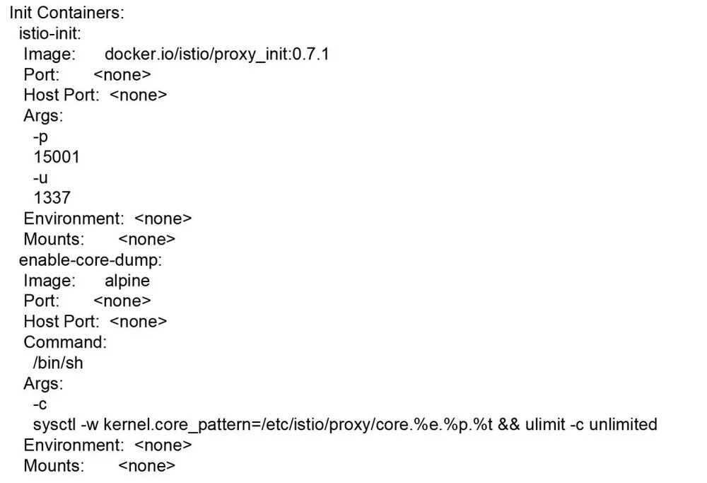
在这个InitContainer里面做什么事情呢？
我们登录进去发现，在这个InitContainer里面运行了一个shell脚本。
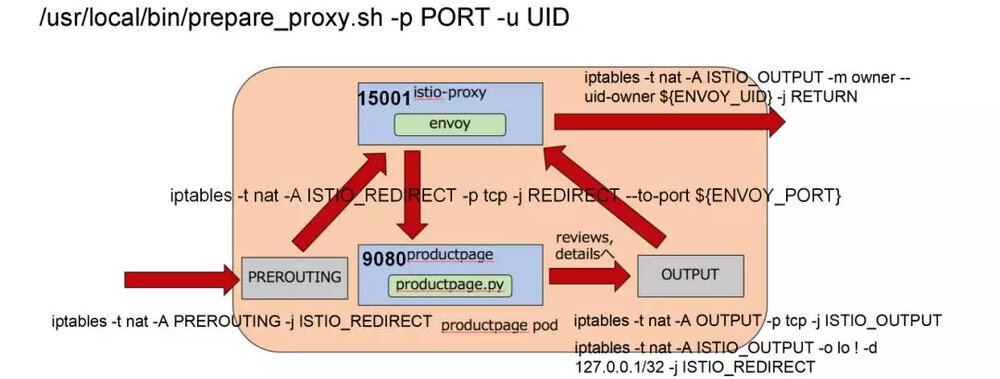
就是这个shell脚本在容器里面写入了大量的iptables规则。
首先定义的一条规则是ISTIO_REDIRECT转发链，这条链不分三七二十一，都将网络包转发给envoy的15000端口。
但是一开始这条链没有被挂到iptables默认的几条链中，所以不起作用。
接下来就是在PREROUTING规则中，使用这个转发链，从而进入容器的所有流量，都被先转发到envoy的15000端口。
envoy作为一个代理，已经被配置好了，将请求转发给productpage程序。
productpage程序接受到请求，会转向调用外部的reviews或者ratings，从上面的分析我们知道，productpage只是做普通的域名调用。
当productpage往后端进行调用的时候，就碰到了output链，这个链会使用转发链，将所有出容器的请求都转发到envoy的15000端口。
这样无论是入口的流量，还是出口的流量，全部用envoy做成了汉堡包。
envoy根据服务发现的配置，知道reviews或者ratings如何访问，于是做最终的对外调用。
这个时候iptables规则会对从envoy出去的流量做一个特殊处理，允许他发出去，不再使用上面的output规则。
istioctl对productpage进行定制化之二：嵌入proxy容器作为sidecar
istioctl做的第二项定制化是，嵌入proxy容器作为sidecar。
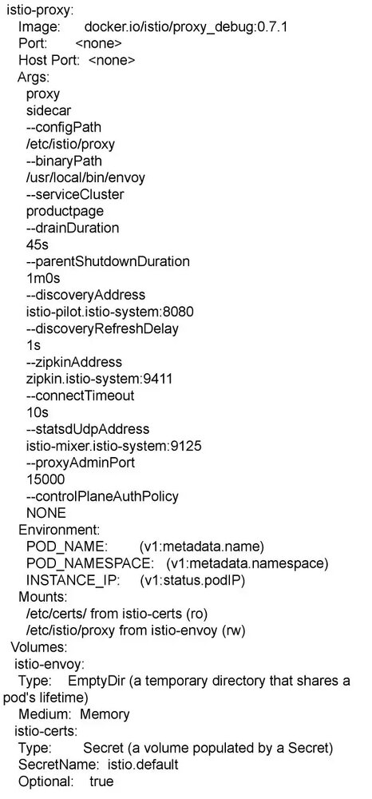
这个似乎看起来更加复杂，但是进入容器我们可以看到，启动了两个进程。
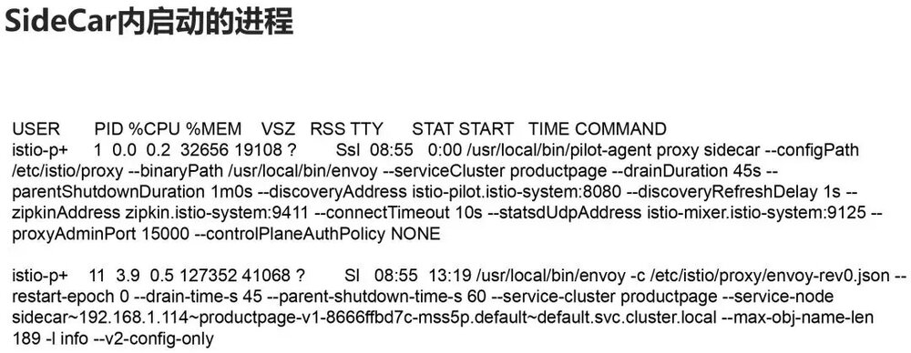
一个是我们熟悉的envoy，他有一个配置文件是/etc/istio/proxy/envoy-rev0.json
我们再前面讲述envoy的时候说过，有了配置文件，envoy就能够转发了，我们先来看看配置文件里面都有啥。
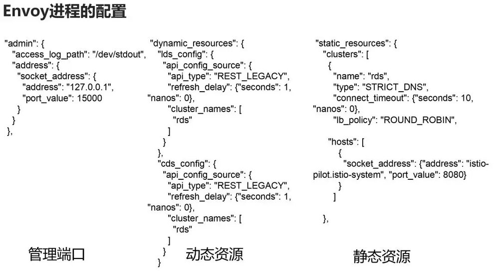
在这里面配置了envoy的管理端口，等一下我们会通过这个端口查看envoy被pilot下发了哪些转发策略。
然后就是动态资源，也即从各种discovery service去拿转发策略。
还有就是静态资源，也即静态配置的，需要重启才能加载的。
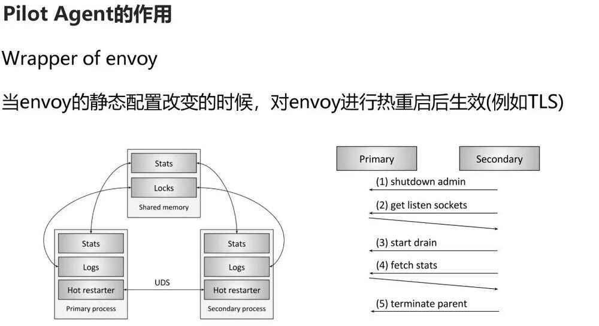
这就是pilot-agent的作用，他是envoy的一个简单的管理器，因为有些静态资源，如果TLS的证书，envoy还不支持动态下发，因而需要重新静态配置，然后pilot-agent负责将envoy进行热重启加载。
好在envoy有良好的热重启机制，重启的时候，会先启动一个备用进程，将转发的统计数据通过shared memory在两个进程间共享。
深入解析pilot的工作机制
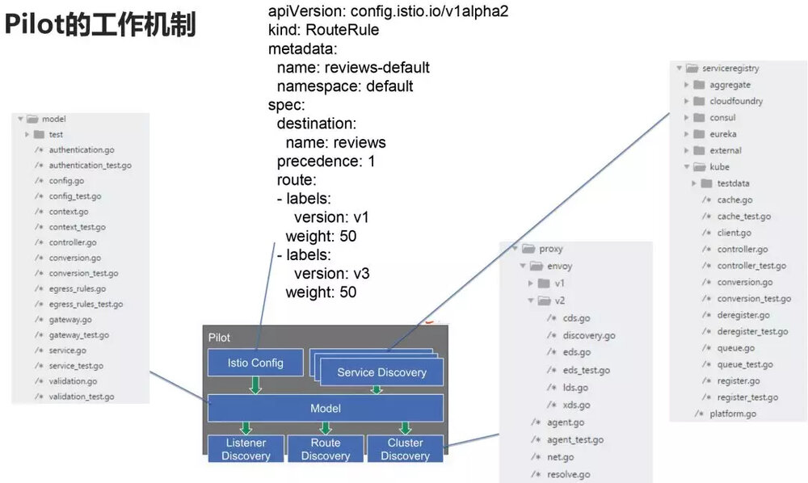
Pilot的工作机制展开后如图所示。
istio config是管理员通过管理接口下发的转发规则。
Service Discovery模块对于Kubernetes来讲，就是创建了一个controller来监听Service创建和删除的事件，当service有变化时，会通知pilot，pilot会根据变化更新下发给envoy的规则。
pilot将管理员输入的转发策略配置和服务发现的当前状态，变成pilot自己的数据结构模型，然后暴露成envoy的api，由于是envoy来调用，因而要实现一个服务端，这里有lds, rds, cds, eds。
接下来我们看，在pilot上配置route之后会发生什么？
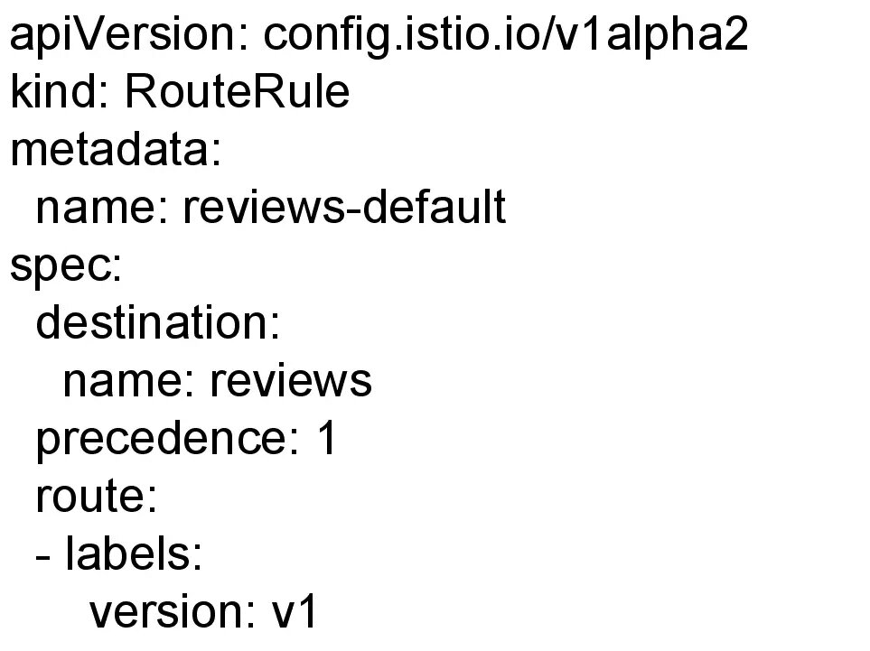
如图，我们将所有的流量都发给版本1。
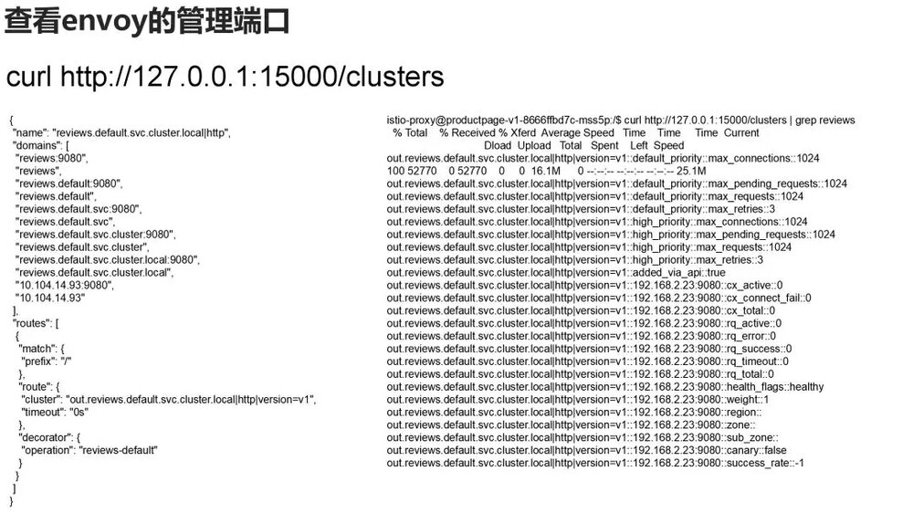
我们查看envoy的管理端口，可以看到只配置了reviews的v1。
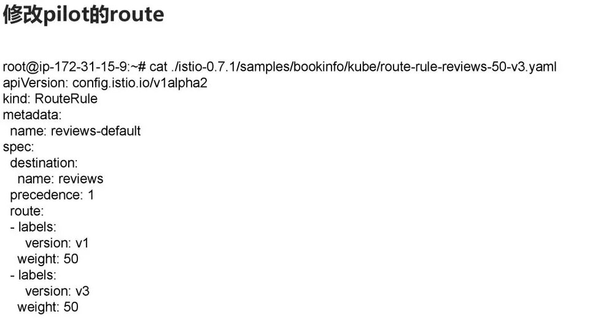
当我们修改路由为v1和v3比例是五十比五十。
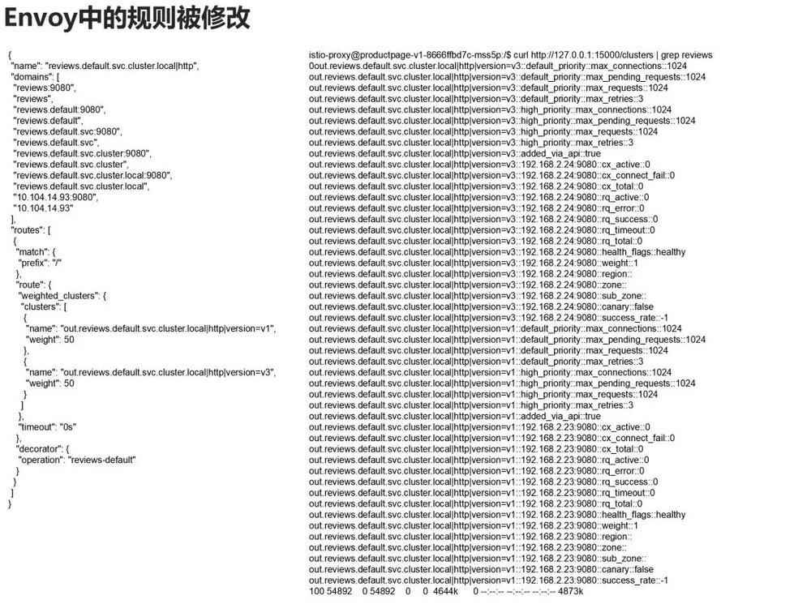
可以看到envoy的管理端口，路由有了两个版本的配置，也对应后端的两个ip地址。